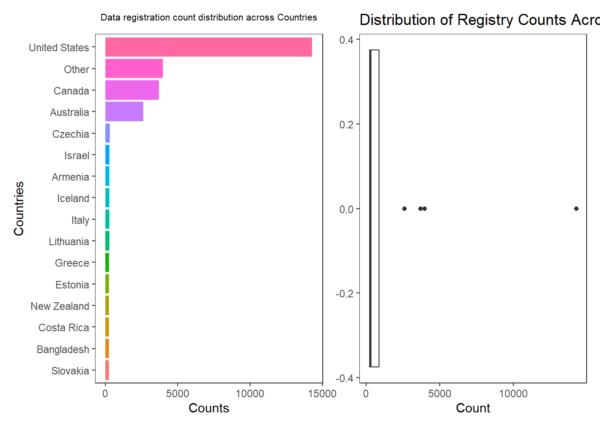
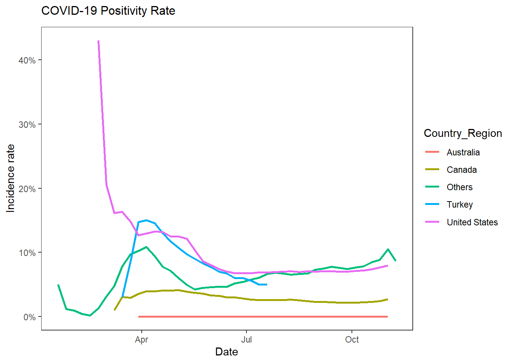
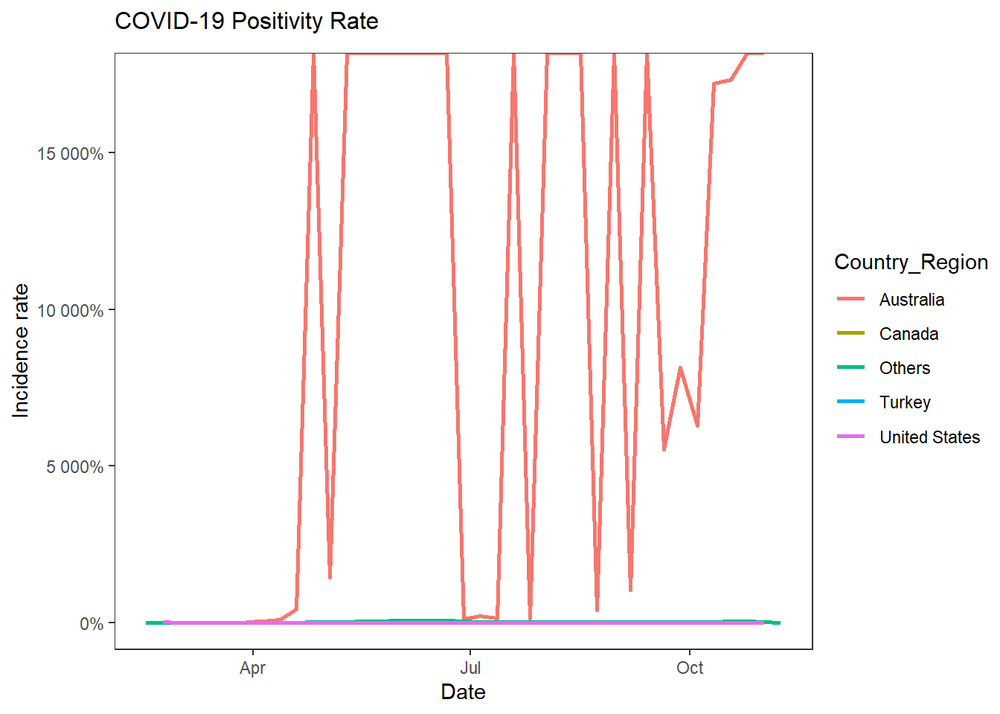
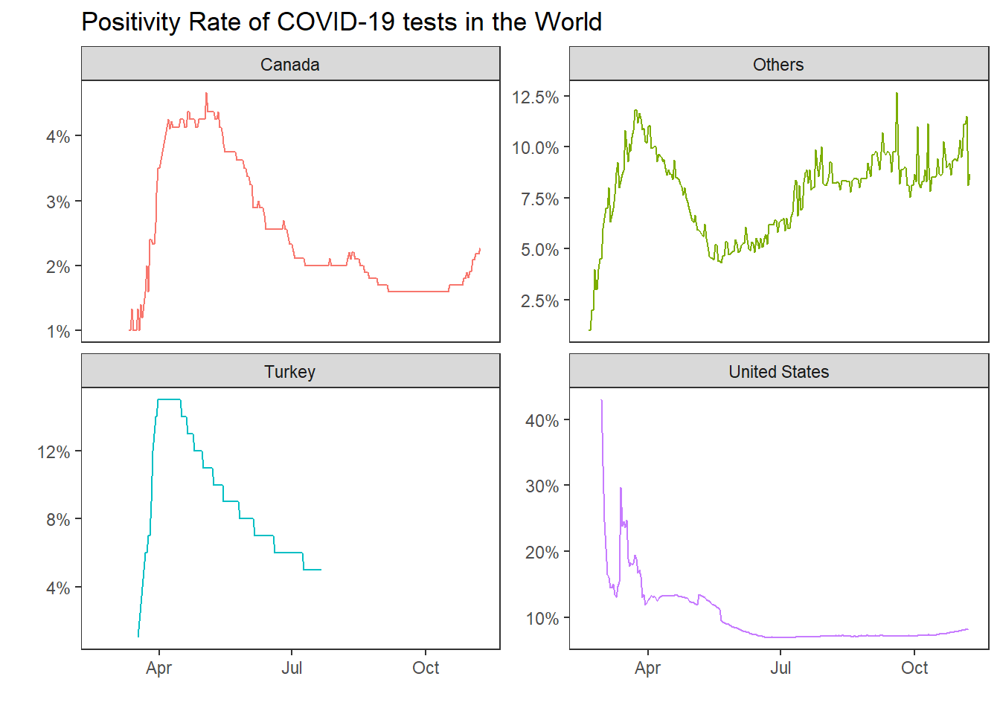
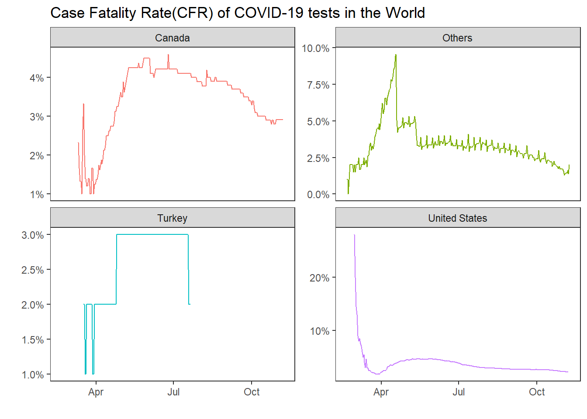
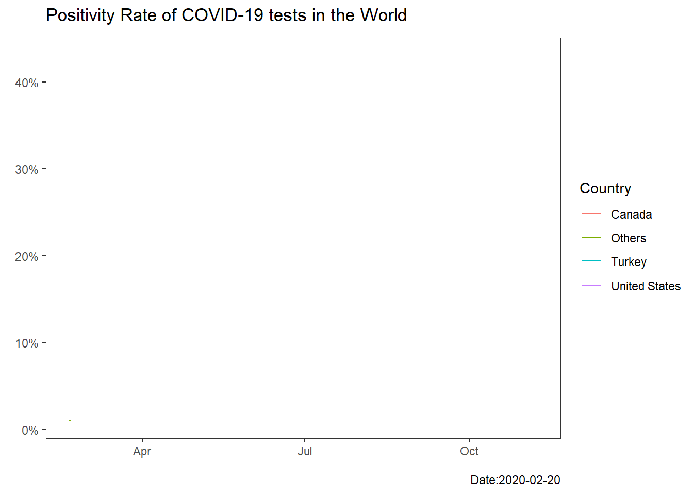
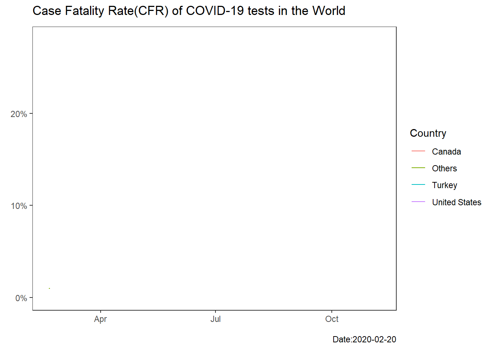
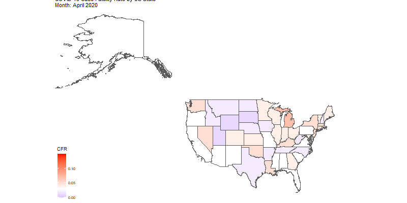

library(tidyverse) # data cleaning
library(scales) # editting labels in our plot
library(patchwork) # plot many graphs in a single canva
library(gganimate) # to create animations
library(gifski) # to convert animations to gif
library(ggthemes) # to get a map theme
library(rnaturalearth) #We can use maps, but the best package for geospatial analysis
library(sf) # work with sf geometry to create maps
library(maps) # us map data, in case.
library(magick) # to read saved gif files.WORLD
Visualizing the COVID-19 Data Set
In this session, we will perform data wrangling, exploratory data analysis, and visualization. We got this dataset from Kaggle. You can access it through this link.
This session is not a report but rather a go through over what my thought process looked like when navigating the data.
Prerequistes
We need to download certain libraries for our analysis.
Load the CSV file
The first step when working with a data set is to load it into our R session and get an overview of it.
path <- "tested_worldwide.csv"
COVID_raw <- read.csv(path)Let’s gather some general information about the type of data set we are dealing with.
str(COVID_raw)'data.frame': 27641 obs. of 12 variables:
$ Date : chr "2020-01-16" "2020-01-17" "2020-01-18" "2020-01-20" ...
$ Country_Region : chr "Iceland" "Iceland" "Iceland" "South Korea" ...
$ Province_State : chr "All States" "All States" "All States" "All States" ...
$ positive : int 3 4 7 1 0 0 0 0 0 0 ...
$ active : int NA NA NA NA NA NA NA NA NA NA ...
$ hospitalized : int NA NA NA NA NA NA NA NA NA NA ...
$ hospitalizedCurr: int NA NA NA NA NA NA NA NA NA NA ...
$ recovered : int NA NA NA NA NA NA NA NA NA NA ...
$ death : int NA NA NA NA 0 0 0 0 0 0 ...
$ total_tested : num NA NA NA 4 0 0 0 0 0 0 ...
$ daily_tested : int NA NA NA NA NA NA NA 0 0 0 ...
$ daily_positive : int NA 1 3 NA NA NA NA 0 0 0 ...We have 27641 observations and 12 variables. Many of our variables are epidemiological outcomes of COVID-19. Since our data values are unlikely to have causality with one another, this session is more focused on reporting and summarizing.
We can answer various questions using the dataset. For instance,
- We can plot visualizations to show changes in recovery, mortality, incidence, etc.
- We can create an incidence chart across a specific country within the period.
- We can develop a time series analysis to forecast the future.
Exploring the data
We can’t know what we are able to do with our data before exploring it. So, let’s look what our data looks like.
df <- COVID_rawThe data type for Date should be a datetime type of data instead of a string.
df <- df %>%
mutate(Date = as.Date(Date, format = "%Y-%m-%d"))
str(df)'data.frame': 27641 obs. of 12 variables:
$ Date : Date, format: "2020-01-16" "2020-01-17" ...
$ Country_Region : chr "Iceland" "Iceland" "Iceland" "South Korea" ...
$ Province_State : chr "All States" "All States" "All States" "All States" ...
$ positive : int 3 4 7 1 0 0 0 0 0 0 ...
$ active : int NA NA NA NA NA NA NA NA NA NA ...
$ hospitalized : int NA NA NA NA NA NA NA NA NA NA ...
$ hospitalizedCurr: int NA NA NA NA NA NA NA NA NA NA ...
$ recovered : int NA NA NA NA NA NA NA NA NA NA ...
$ death : int NA NA NA NA 0 0 0 0 0 0 ...
$ total_tested : num NA NA NA 4 0 0 0 0 0 0 ...
$ daily_tested : int NA NA NA NA NA NA NA 0 0 0 ...
$ daily_positive : int NA 1 3 NA NA NA NA 0 0 0 ...Let’s see how many NA values we have in each column.
na_count <- function(dataframe){
Names_cols <- colnames(dataframe)
a <- sapply(Names_cols,
function(c){
round(mean(is.na(dataframe[, grepl(c, names(df))])), 2)
}
)
my_df <- data.frame(
Columns = attr(a, 'names'),
na_prcnt = a,
row.names = NULL
)
return(my_df)
}
na_count(df) Columns na_prcnt
1 Date 0.00
2 Country_Region 0.00
3 Province_State 0.00
4 positive 0.16
5 active 0.36
6 hospitalized 0.58
7 hospitalizedCurr 0.47
8 recovered 0.35
9 death 0.15
10 total_tested 0.03
11 daily_tested 0.04
12 daily_positive 0.16We can also use the colSums() function to see na_vals in our data frame.
Some variables have too many missing values that we cannot perform any task as a data analyst, except to present them in visuals. Even then, they don’t give viable information about the phenomenon. hospitalized, active, and hospitalizedCurr have too many missing values. Therefore, it is safer to remove them.
This cleaning is done after exploring our data. This is done to write clean data cleaning code with clear steps.
Let us see the distribution of our observations.
fig1 <- df %>%
mutate(Country_Region = fct_lump(Country_Region, n = 15)) %>%
count(Country_Region, sort = T) %>%
mutate(Country_Region = fct_reorder(Country_Region, n)) %>%
ggplot(aes(Country_Region, n, fill = Country_Region)) +
geom_col(show.legend = FALSE)+
coord_flip()+
theme_test()+
labs(
title = "Data registration count distribution across Countries",
x = "Countries",
y = "Counts"
)+
theme(plot.title = element_text(
size = 8,
hjust = 0.5,
vjust = 1,
margin = margin(b = 10)
))
fig2 <- df %>%
mutate(Country_Region = fct_lump(Country_Region, n = 15)) %>%
count(Country_Region, sort = T) %>%
mutate(Country_Region = fct_reorder(Country_Region, n)) %>%
ggplot(aes(n)) +
geom_boxplot()+
labs(
title = "Distribution of Registry Counts Across Countries",
x = "Count"
)+
theme(plot.title = element_text(
size = 8,
hjust = 0.5,
vjust = 1,
margin = margin(b = 10)
))+
theme_test()
Our visualization tells us that our data has fewer data points for countries outside the USA, Australia, and Canada. Hence, it is wise to make our time series model, for instance, about the incidence of COVID-19 in these countries.
df <- df %>%
filter((!(is.na(total_tested) | is.na(positive))) & total_tested >= 25) %>%
mutate(Country_Region =
if_else(Country_Region %in% c("Turkey", "United States", "Australia", "Canada"),
Country_Region, "Others"),
incidence_rate = round((positive / total_tested), 2))df %>%
mutate(
Date = floor_date(Date, "week")
) %>%
group_by(Date, Country_Region) %>%
summarise(
incidence_rate = mean(incidence_rate, na.rm = TRUE),
Count = n()
) %>%
filter(!is.na(incidence_rate)) %>%
ggplot(aes(Date, incidence_rate, colour = Country_Region))+
geom_line(linewidth = 1)+
scale_y_continuous(labels = scales::percent)+
theme_test()+
labs(
y = "Incidence rate",
title = "COVID-19 Positivity Rate"
)+
theme(plot.title = element_text(
size = 12,
vjust = 1,
margin = margin(b = 10)
))
Let us plot the death/ positive people ratio for our countries.
df %>%
mutate(
Date = floor_date(Date, "week")
) %>%
group_by(Date, Country_Region) %>%
summarise(
CFR = round(mean((death/ positive), na.rm = T), 2),
Count = n(),
.groups = "drop"
) %>%
filter(!is.na(CFR)) %>%
ggplot(aes(Date, CFR, colour = Country_Region))+
geom_line(linewidth = 1)+
scale_y_continuous(labels = scales::percent)+
theme_test()+
labs(
y = "Incidence rate",
title = "COVID-19 Positivity Rate"
)+
theme(plot.title = element_text(
size = 12,
vjust = 1,
margin = margin(b = 10)
))
Both the PR and CFR plot graphs show us that Australia’s dataset has a data entry error. The CFR value is 1/∞ while the positivity value is ∞. Australia’s data has noise. Therefore, we need to remove Australia from our analysis.
At this point, we have understood our data. But, we need to have a clean script so people can understand our analysis when we share it, and call our clean dataframe COVID
COVID <- COVID_raw %>%
filter(positive != 0, death != 0,
!is.na(total_tested), !is.na(positive), total_tested >= 25, Country_Region != "Australia") %>%
#edit existing columns
# Time date format
mutate(Date = as.Date(Date, format = "%Y-%m-%d"),
#Remove many categorical variables
Country_Region =
if_else(Country_Region %in% c("Turkey", "United States", "Canada"),
Country_Region, "Others"),
#Add new parameters
# filter before these: positive and death can't be 0.
positivity_rate = round((positive / total_tested), 2),
CFR = round((death/ positive), 2)
) %>%
# Wrong values
filter(CFR < 1 & CFR >= 0) %>%
#remove columns with significant NA values
select(-c(hospitalized, hospitalizedCurr)) %>%
rename(Country = Country_Region)Visualization
- Smoothed faceted time graph for incidence rate.
- Smoothed faceted time graph for CFR(Case Fatality Rate)
- Map animation for both incidence rate and CFR for the USA
Let us first create a clean environment ready to perform our upcoming graphs, maps, and animations.
COVID_4graphs <- COVID %>%
mutate(Date = floor_date(Date, "day")) %>%
group_by(Date, Country) %>%
summarise(
positivity_rate = mean(positivity_rate, na.rm = T),
CFR = mean(CFR, na.rm = T),
.groups = "drop"
)
COVID_4graphs %>%
ggplot(aes(Date, positivity_rate, color = Country)) +
geom_line() +
scale_y_continuous(labels = scales::percent)+
facet_wrap(~Country, scales = "free_y")+
theme_test()+
labs(
title = "Positivity Rate of COVID-19 tests in the World",
x = "",
y = ""
)+
theme(legend.position = 'none')
If you have noticed in the code, we have included this line mutate(Date = floor_date(Date, "day")), which is from the lubridate package. Although it looks unnecessary, we added it so that we can adjust and observe the trend over weeks or months when needed.
We can reuse the same formula, with minimal adjustments, to plot CFR.
COVID_4graphs %>%
ggplot(aes(Date, CFR, color = Country)) +
geom_line() +
scale_y_continuous(labels = scales::percent)+
facet_wrap(~Country, scales = "free_y")+
theme_test()+
labs(
title = "Case Fatality Rate(CFR) of COVID-19 tests in the World",
x = "",
y = ""
)+
theme(legend.position = 'none')
We can observe that generally, there is a decrease in CFR across our timeline. On the other hand, we have noticed that there is a noise in Turkiye’s observations. Usually, a straight line in a graph shows that there are missing values, and ggplot2 is trying to forward fill the missing points.
Animation
- We will create an animated plot of the USA.
We will create our animations using the gganimate library.
COVID_4graphs %>%
ggplot(aes(Date, positivity_rate, color = Country)) +
geom_line() +
scale_y_continuous(labels = scales::percent)+
theme_test()+
labs(
title = "Positivity Rate of COVID-19 tests in the World",
caption = "Date:{frame_along}",
x = "",
y = ""
)+
transition_reveal(Date)
COVID_4graphs %>%
ggplot(aes(Date, CFR, color = Country)) +
geom_line() +
scale_y_continuous(labels = scales::percent)+
theme_test()+
labs(
title = "Case Fatality Rate(CFR) of COVID-19 tests in the World",
caption = "Date:{frame_along}",
x = "",
y = ""
)+
theme(axis.title = element_text(
hjust = 1,
vjust = 2.5
))+
transition_reveal(Date)
Map
Let us find the geospatial data we need to create the map of the USA. Once we get it, we will combine it with our COVID_USA dataframe.
COVID_USA <- COVID %>%
filter(Country == "United States") %>%
rename(State = Province_State)
COVID_USA %>%
count(State, wt = daily_tested) %>%
arrange(desc(n)) %>%
head() State n
1 All States 136143695
2 California 19564078
3 New York 15515869
4 Texas 8634933
5 Illinois 8312522
6 Florida 6344789USA <- ne_states(country = "United States of America",
returnclass = "sf")
USA <- USA %>%
select(name_en, name_tr, geometry) %>%
rename(State = name_en)
COVID_USA <- COVID_USA %>% left_join(USA, by = "State") %>%
st_as_sf()Since we are creating an animation, we need to reduce our observations to save computing power. We will group the data per month.
COVID_USA <- COVID_USA %>%
mutate(
Date = floor_date(Date, "months"))Let us prepare a clean dataframe, for the last time here, ready for our animation.
We want to create an animation of the Case Fatality Rate. So, we need the mean value of each state’s monthly CFR and the sf_geometry of each state in our dataframe
COVID_USA_4map <- COVID_USA %>%
filter(State != "All States") %>%
group_by(Date, State, geometry) %>%
summarise(
CFR = round(mean(CFR, na.rm = T), 2),
.groups = "drop"
)
COVID_USA_4map <- COVID_USA_4map %>%
distinct(Date, State, .keep_all = TRUE) If we try to plot an animated plot, it will crash for a few reasons. One reason is that we don’t have enough data for the first two months to plot. If you need a detailed explanation about how gganimate works, please pay a visit to your nearest data analyst. In my defense, this is my table:
COVID_USA_4map %>%
count(Date)Simple feature collection with 10 features and 2 fields
Geometry type: MULTIPOLYGON
Dimension: XY
Bounding box: xmin: -179.1435 ymin: 18.90612 xmax: 179.7809 ymax: 71.4125
Geodetic CRS: WGS 84
# A tibble: 10 × 3
Date n geometry
* <date> <int> <MULTIPOLYGON [°]>
1 2020-02-01 1 (((-122.7411 48.97679, -122.7316 48.95921, -122.7775 48.964…
2 2020-03-01 51 (((-81.75251 24.57612, -81.77294 24.55972, -81.78038 24.556…
3 2020-04-01 55 (((-75.67033 37.46284, -75.67648 37.45507, -75.68432 37.436…
4 2020-05-01 55 (((-75.67033 37.46284, -75.67648 37.45507, -75.68432 37.436…
5 2020-06-01 55 (((-75.67033 37.46284, -75.67648 37.45507, -75.68432 37.436…
6 2020-07-01 55 (((-75.67033 37.46284, -75.67648 37.45507, -75.68432 37.436…
7 2020-08-01 55 (((-75.67033 37.46284, -75.67648 37.45507, -75.68432 37.436…
8 2020-09-01 55 (((-75.67033 37.46284, -75.67648 37.45507, -75.68432 37.436…
9 2020-10-01 55 (((-75.67033 37.46284, -75.67648 37.45507, -75.68432 37.436…
10 2020-11-01 55 (((-75.67033 37.46284, -75.67648 37.45507, -75.68432 37.436…COVID_USA_4map <- COVID_USA_4map %>%
filter(Date >= "2020-04-01")
p <- COVID_USA_4map %>%
ggplot() +
geom_sf(aes(fill = CFR)) +
scale_fill_gradient2(
low = "blue",
mid = "white",
high = "red",
midpoint = median(COVID_USA$CFR, na.rm = TRUE),
na.value = "grey80"
) +
coord_sf(xlim = c(-170, -65), ylim = c(25, 70)) +
theme_map() +
labs(
title = "COVID-19 Case Fatality Rate by US State\nMonth: {format(frame_time, '%B %Y')}",
fill = "CFR"
) +
transition_time(Date) +
ease_aes('linear')
animated_gif <- animate(p, renderer = gifski_renderer(), width = 800, height = 400, fps = 1, duration = 8)
In today’s analysis, we have seen:
- Data Wrangling: we cleaned and prepared the raw data, handled the anomailities in our data using tidyverse
- Exploratory Data Analysis: We identified patterns in CFR and Positivity Rate using tidyverse
- Visualization: we plotted ggplots, maps, and animated graphs using gganimate.
- Spatial Analysis using the packages maps, sf, and ggthemes.
We will see how to create a time series analysis using ARIMA.
NB: This webpage is a work in progress and is not the final version. The analysis here is for educational and exploratory purposes. So, it should be treated as such and shouldn’t be used as a qualified medical, public health, or epidemiological finding. The conclusions reached here are limited by the data available and the statistical methods opted to be followed.
Created by - Amir Seid
Medical Student
Quantitative Research
Data Science
Application of ML in Healthcare.